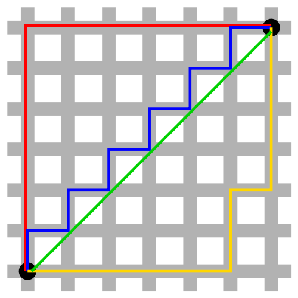
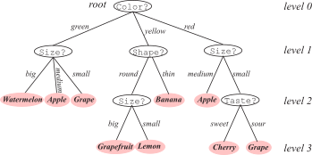
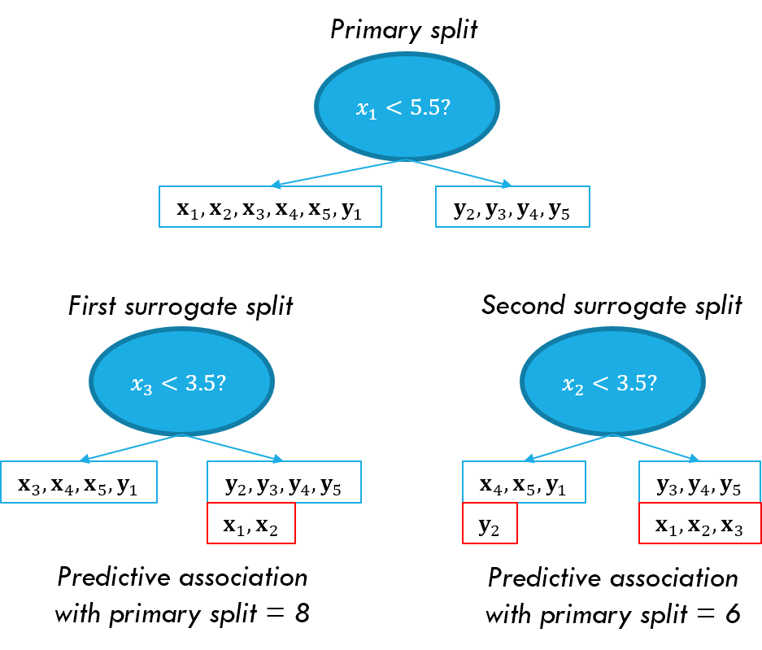

Scott Doyle / scottdoy@buffalo.edu
Let’s say we have a set of points called $\mathcal{X}$.
We define a function called a distance function:
$$ d: \mathcal{X} \times \mathcal{X} \mapsto [0,\infty) $$
This function says that you can take two points in $\mathcal{X}$ and map them to a point on the number line from 0 to an arbitrarily large number.
We call $d$ a metric if, for all points $\mathbf{x,y,z}\in\mathcal{X}$, ALL of the following conditions are satisified:
Non-negativity: Distances cannot be less than zero.
$$d(\mathbf{x,y}) \geq 0$$Identity of Indiscernibles: If two points have a distance of 0, then they are (effectively) the same point.
$$d(\mathbf{x,y})=0\iff\mathbf{x}=\mathbf{y}$$Symmetry: The distance from $\mathbf{x}$ to $\mathbf{y}$ should be the same as the distance from $\mathbf{y}$ to $\mathbf{x}$
$$d(\mathbf{x,y}) = d(\mathbf{y,x})$$
Triangle Inequality: A straight path between two points $\mathbf{x}$ and $\mathbf{z}$ should be the shortest path, compared to a “detour” through point $\mathbf{y}$)
$$d(\mathbf{x,z}) \leq d(\mathbf{x,y}) + d(\mathbf{y,z})$$$$ d(\mathbf{x,y}) = \begin{cases} 1 & \text{if } \mathbf{x\neq y}\\ 0 & \text{if } \mathbf{x=y} \end{cases}$$
$ d(\mathbf{x,y}) = \sqrt{(x_{1}-y_{1})^{2}+\cdots+(x_{d}-y_{d})^{2}} $
$$ d(\mathbf{x,y}) = \sum_{i=1}^{d}|x_{i}-y_{i}| $$

Metric features are those which can be:
Nonmetric or nominal features cannot be ordered, and there is no “distance” between them.
Example: Animal teeth can be small and fine, they can exist in one line or multiple rows, they can be tusks, and some animals have no teeth.
There is no sense of distance between “tusks” and “beaks”.
Objects in nonmetric features can be represented by property d-tuples.
For example, an animal might be a $d$-tuple characterizing the animal’s teeth: (size, type, use).
Thus, to describe two different animals:
How do we classify a set of objects represented by tuples?
For each object, ask a series of questions to try and identify it.
These can be “yes/no”, “true/false”, or “value(property)$\in${values}” questions.

Links or branches correspond to specific values from the node.
Starting from the root node, the link is followed to the descendent node based on its value.
Links must be distinct and exhaustive:
When a leaf node is reached, there are no more questions and the object is classified.
Objects can be represented by their property-value sets:
$\mathbf{x}=${“sweet”, “yellow”, “thin”, “medium”}
Banana: is (yellow AND thin), which is all we need to find a leaf for $\mathbf{x}$
Categories are defined by node paths:
Easily incorporates knowledge from human experts (assuming the problem is simple and training set is small).
Assume we have training data $\mathcal{D}$ and a pre-determined set of nodes or features.
Each node splits the training set into smaller subsets: $\mathcal{D} = \{\mathcal{D}_{1}, \mathcal{D}_{2}\}$.
If all the subsets have the same label, then we can stop splitting because the node is pure; otherwise, the node is impure.
This is part of the CART approach (Classification And Regression Trees).
At any node, you can either:
Six questions arise from this approach:
The number of branches descending from a node is its branching factor, $B$.
$B$ can be selected by the designer, but any node with $B>2$ can be replaced with a series of nodes with $B=2$ to make it a binary tree.
We will focus on binary trees, which are easier to train and understand. However, $B>2$ may be more computationally efficient in practice.
We call a split a query, denoted $T$. We want to select our queries such that:
First, simplicity: We should use the fewest number of possible queries.
When deciding whether to split a node, we should quantify node “impurity”.
Define a function $i(N)$, which returns some measure of impurity at node $N$:
The most common impurity is Entropy / Information Impurity:
$$ i(N) = - \sum_{j}\widehat{P}(\omega_{j})\log_{2}{\widehat{P}(\omega_{j})} $$
Here, $\widehat{P}(\omega_{j})$ refers to the fraction of training patterns in category $\omega_{j}$ at node $N$.
$$ i(N) = - \sum_{j}\widehat{P}(\omega_{j})\log_{2}{\widehat{P}(\omega_{j})} $$
Given this, when is $i(N)$ at a maximum, and when is it at a minimum?
What are the values of $\widehat{P}(\omega_{1})$ and $\widehat{P}(\omega_{2})$, and when are they most informative or least informative?
If there are two classes, and node $N$ contains equal numbers of points from each class, then $\widehat{P}(\omega_{1}) = \widehat{P}(\omega_{2}) = 0.5$
\begin{align} i(N) &= - \sum_{j}\widehat{P}(\omega_{j})\log_{2}{\widehat{P}(\omega_{j})}\\ &= -\left[ \widehat{P}(\omega_{1})\log_{2}{\widehat{P}(\omega_{1})} + \widehat{P}(\omega_{2})\log_{2}{\widehat{P}(\omega_{2})}\right]\\ &= -\left[ 0.5\log_{2}{0.5} + 0.5\log_{2}{0.5} \right]\\ &= -\left[ 0.5(-1) + 0.5(-1) \right]\\ &= 1 \end{align}
If there are two classes, and node $N$ contains only points from one class, $\omega_{1}$, then $\widehat{P}(\omega_{1}) = 1.0, \widehat{P}(\omega_{2}) = 0.0$
\begin{align} i(N) &= - \sum_{j}\widehat{P}(\omega_{j})\log_{2}{\widehat{P}(\omega_{j})}\\ &= -\left[ \widehat{P}(\omega_{1})\log_{2}{\widehat{P}(\omega_{1})} + \widehat{P}(\omega_{2})\log_{2}{\widehat{P}(\omega_{2})}\right]\\ &= -\left[ 1.0\log_{2}{1.0} \right]\\ &= -\left[ 1.0(0) \right]\\ &= 0 \end{align}
Variance Impurity:
$$ i(N) = \widehat{P}(\omega_{1})\widehat{P}(\omega_{2}) $$
This is most useful in the two-category case; if the node is pure, then either $\widehat{P}(\omega_{1})$ or $\widehat{P}(\omega_{2})$ is $0$, and therefore $i(N)=0$.
Gini Impurity:
$$ i(N) = \sum_{i\neq j}\widehat{P}(\omega_{i})\widehat{P}(\omega_{j}) = \left[1-\sum_{j}\widehat{P}^{2}(\omega_{j})\right]$$
This is the extension of Variance Impurity to the multi-class case.
We simply sum over the product of priors of every unique pair of $\omega_{i}$ and $\omega_{j}$.
Misclassification Impurity:
$$ i(N) = 1-\max_{j}{\widehat{P}(\omega_{j})} $$
This is the minimum probability that a training pattern would be misclassified at $N$.
So we have two criteria: a simple tree that leads to nodes with minimum impurity.
Therefore, given node $N$, what split $s$ should we use for query $T$?
Since we’re trying to minimize impurity (i.e. maximize purity) at the descendent nodes, we can calculate the impurity gradient:
$$\Delta i(s) = i(N)-\widehat{P}_{L}i(N_{L})-(1 - \widehat{P}_{L})i(N_{R})$$
$N_{L}, N_{R}$ are the left and right descendent nodes and $i(N_{L}), i(N_{R})$ are their impurities.
$\widehat{P}_{L}$ is the fraction of patterns / data at node $N$ that go to $N_{L}$ when query $T$ is used.
Thus, we seek the split $s^{\star}=\max_{s}{\Delta i(s)}$.
If we are using entropy impurity, this is equivalent to maximizing information gain.
$$ \Delta i(s) = i(N) - \widehat{P}_{L}i(N_{L}) - (1 - \widehat{P}_{L})i(N_{R}) $$
For binary trees, this is a one-dimensional optimization problem.
This is a local, greedy strategy: we select the optimal $s$ at each $N$ separately.
This is NOT guaranteed to be globally optimal, and will not necessarily yield a small tree.
However, it is a straightforward method that reaches a solution in a reasonable amount of time.
The selection of impurity function can affect the selection of a split.
Imagine that at node $N$ there are 100 points, 90 of which are from $\omega_{1}$ and 10 of which are in $\omega_{2}$.
Now you have to evaluate a proposed split that will create two new nodes (binary tree), where the left node contains 30 points (20 from $\omega_{1}$, and 10 from $\omega_{2}$), and the right contains 70 points (70 from $\omega_{1}$, and 0 from $\omega_{2}$).
What are the Misclassification and Gini impurities?
Misclassification Impurity
\begin{align} i_{MI}(N) &= 1 - \max_{j}\widehat{P}(\omega_{j})\\ &= 1 - 0.9 = 0.1 \\ i_{MI}(N_{R}) &= 1 - 1 = 0 \\ i_{MI}(N_{L}) &= 1 - 0.66 = 0.33 \\ \Delta i_{MI}(N) &= i(N) - \widehat{P}_{L} i(N_{L}) - (1 - \widehat{P}_{L}) i(N_{R})\\ &= 0.1 - 0.3 * 0.3 - (1-0.3) * 0\\ &= \mathbf{0} \end{align}
Gini Impurity
\begin{align} i_{GI}(N) &= \left[1-\sum_{j}\widehat{P}^{2}(\omega_{j})\right]\\ &= \left[1 - (0.9^{2} + 0.1^{2})\right] = 0.09 \\ i_{GI}(N_{R}) &= 0.5 \left[1 - (1.0^{2} + 0^{2})\right] = 0 \\ i_{GI}(N_{L}) &= 0.5 \left[1 - (0.66^{2} + 0.33^{2})\right] = 0.22 \\ \Delta i_{GI}(N) &= i(N) - \widehat{P}_{L} i(N_{L}) - (1 - \widehat{P}_{L}) i(N_{R})\\ &= 0.09 - 0.33 * 0.22 - (1-0.3) * 0\\ &= \mathbf{0.0234} \end{align}
The goal in the multiclass case is to identify groups of the $c$ classes.
If our set of categories is $\mathcal{C}=\{\omega_{1},\omega_{2},,\omega_{c}\}$, we want a split that creates supercategories $\mathcal{C}_{1}=\{\omega_{1i},\omega_{2i},,\omega_{ik}\}$ and $\mathcal{C}_{2} = \mathcal{C}-\mathcal{C}_{1}$.
Our impurity criterion is now the change in impurity: $\Delta i(s,\mathcal{C}_{1})$. Thus, we find the split $s^{}(\mathcal{C}_{1})$ that maximizes the impurity gradient, given $\mathcal{C}_{1}$.
Then we find the supercategory $\mathcal{C}_{1}^{\ast}$ that maximizes $\Delta i(s^{\ast}(\mathcal{C}_{1}), \mathcal{C}_{1})$, meaning that we are searching for both the optimal split AND the optimal supercategories.
This has many applications in biomedical data!
What happens if we keep splitting until each leaf only contains one data point?
What happens if we stop splitting our training set too early?
So we need to know how to stop splitting - How should we do this?
We separate $\mathcal{D}$ into training, $\mathcal{D}_{1}$, and validation, $\mathcal{D}_{2}=\mathcal{D}-\mathcal{D}_{1}$.
Use $\mathcal{D}_{1}$ to build a tree, then evaluate performance with $\mathcal{D}_{2}$.
Continue splitting the tree until performance peaks on $\mathcal{D}_{2}$.
Consider this method if you have a LOT of training data, and you are reasonably sure that $\mathcal{D}_{2}$ generalizes well to the entire feature space.
Keep splitting until the best splits do not change the impurity:
$$ \max_{s}{\Delta i(s)}\leq \beta $$
This allows us to use all of $\mathcal{D}$ to train the tree (without splitting off a validation set).
Leaf nodes can exist at different levels in the tree, allowing for varieties of class complexity.
Need to select $\beta$ appropriately?
To balance accuracy and complexity, we can define an overall complexity function to minimize:
$$ \alpha \ast \left[\textrm{size}\right] + \sum_{\textrm{nodes}}i(N) $$
where $\left[\textrm{size}\right]$ is the number of nodes or links, and $\alpha$ is a positive constant.
We keep splitting the tree until this function is minimized.
If we are using entropy impurity, this is related to the minimum description length (MDL), which we’ll talk about later when we discuss classifier evaluation.
The first term penalizes having too many nodes or links, while the second term penalizes leaf nodes with a high degree of impurity.
Again, we have a parameter in $\alpha$ that we need to set.
Building a tree from the ground up requires us to decide whether to split at the current node.
We cannot incorporate information about descendent nodes – the so-called horizon effect.
In pruning, we build an “exhaustive” tree, and try to merge pairs of neighboring leaves together – the inverse of splitting.
Pairs are merged if they yield an acceptable (small) increase in impurity, and the common antecedent node is declared a leaf.
Pruning uses all training, and avoids the horizon effect by working backwards.
For large training sets and complex problems, this can be computationally prohibitive.
For small training sets, pruning is generally preferred, but is sensitive to training data!
This rule is easy:
We sometimes encounter deficient patterns, or data points with some during training or classification.
If we throw out the deficient patterns at the start, we end up wasting a lot of valuable data!
For training, we can just ignore the missing attributes.
To handle classification, we can also calculate “surrogate” splits that approximate the primary.
If a pattern is deficient, we use the best split that does not include the missing attributes.

Sometimes it can be more efficient to use linear combinations of features to define splits.
This can help create trees with simple decision planes, which are probably more realistic. It’s easy to see this in the two-variable case.
ID3: used with nominal / unordered inputs.
Every split has a branching factor $B_{j}$, which is the number of attribute bins of variable $j$ used for splitting – not often binary.
The number of levels is equal to the number of input variables.
The algorithm continues until all nodes are pure, and there are no more variables.
This can be followed up by pruning.
C4.5, a successor to ID3, is a popular method for decision trees.
Improvements to ID3:
C4.5 does not pre-compute “surrogate” splits, as in CART.
The leftmost leaf in this tree has an associated rule:
IF: $$\begin{bmatrix} (0.04x_{1} + 0.16x_{2} < 0.11)\\ \textrm{AND }(0.27x_{1}-0.44x_{2} < -0.02)\\ \textrm{AND }(0.96x_{1}-1.77x_{2} < -0.45)\\ \textrm{AND }(5.43x_{1}-13.33x_{2} < -6.03) \end{bmatrix}$$
THEN: $$\mathbf{x}\in\omega_{1}$$
This rule can be simplified as:
IF: $$\begin{bmatrix} (0.04x_{1} + 0.16x_{2} < 0.11)\\ \textrm{AND }(5.43x_{1}-13.33x_{2} < -6.03) \end{bmatrix}$$
THEN: $$\mathbf{x}\in\omega_{1}$$
Note that unlike the leaf merging strategy of CART, the rule-based method can collapse nodes near the root.
The general components of decision tree design are:
Each algorithm has attributes that may be well-suited to your dataset.
As with everything in ML, you should experiment, see what works and what doesn’t.
Remember that there is no such thing as a “best” classifier for all situations.